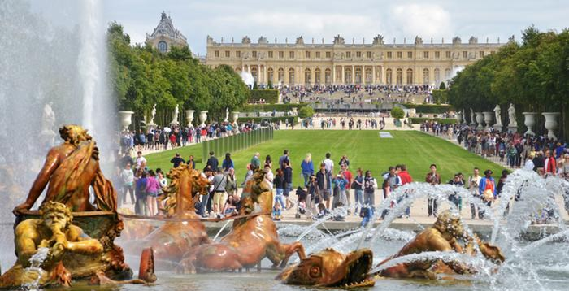
Fransa: Versailles Sarayı
Paris yakınlarındaki Versailles Sarayı, bin 800 odası ile Avrupa’nın en büyük sarayları arasında yer alıyor.
Sarayın yapımına 1677 yılında XIV. Ludwig döneminde başlanmıştı. Avrupa’daki birçok hükümdar, kendi saraylarının yapımında Versailles Sarayı’nı örnek aldı.
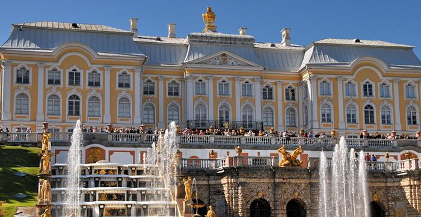
Rusya: Peterhof Sarayı
Rusya’nın Versailles’ı olarak kabul edilen Petershof Sarayı, St. Petersburg’un batısında yer alıyor. 1723 yılında açılan Finlandiya Körfezi‘nin güney kıyısındaki saray, Çar I. Peter tarafından yazlık rezidans olarak kullanılmıştı.
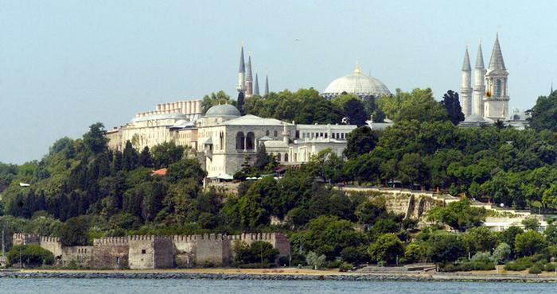
Türkiye: Topkapı Sarayı
Topkapı Sarayı 15. yüzyılın ortalarından itibaren çok sayıda Osmanlı padişahına ev sahipliği yaptı. Fatih Sultan Mehmed’in 1453 yılında İstanbul’u fethetmesinden sonra 1460 yıllarında yapımına başlanan ve 1478 yılında tamamlanan Saray 700 bin metrakarelik bir alan üzerine kurulu. Dört avluya açılan sarayda yaklaşık 5 bin kişi hem yaşıyor hem de çalışıyordu.
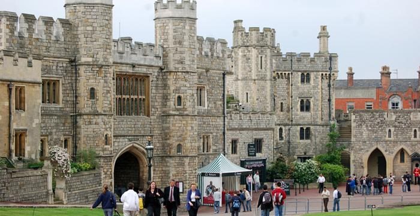
İngiltere: Windsor Şatosu
Britanya monarşisinin resmi ana rezidanslarından biri olan Windsor, dünyanın aralıksız yaşanılan en eski şatosu. 1078 yılında yapımına başlanan Saray, garnizon ve hapishane olarak da kullanıldı. Saray, İngiltere Kraliçesi tarafından hala kullanılıyor.
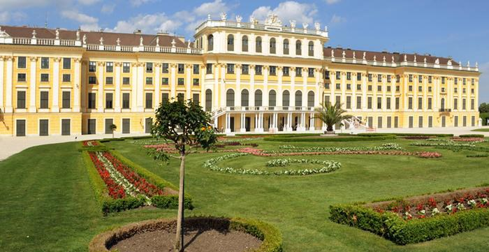
Avusturya: Schönnbrunn Sarayı
Kraliçe Maria Theresia, Viyana’daki Schönnbrunn Sarayı’nı yaklaşık 300 yıl önce Avrupa’daki avlu yaşamının merkezi haline getirdi.
Avusturya-Macaristan İmparatorluğu’nun görkemli yapılarından olan bu saray, günümüzde de yılda ortalama 3 milyon turist tarafından ziyaret ediliyor.
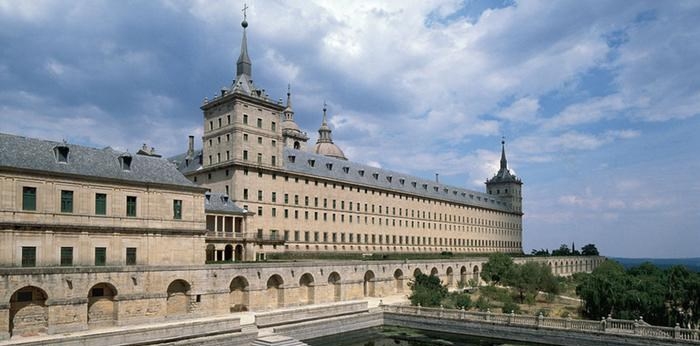
İspanya: El Escorial
Madrid yakınlarında saray, manastır ve kütüphaneden oluşan bu yapı kompleksi için İspanyollar ‘dünyanın sekizinci harikası’ diyor. 207 metre uzunluğunda ve 161 metre genişliğindeki yapı, dünyanın en büyük Rönesans dönemi eseri. Çoğu İspanyol kralının anıt mezarı da burada bulunuyor.
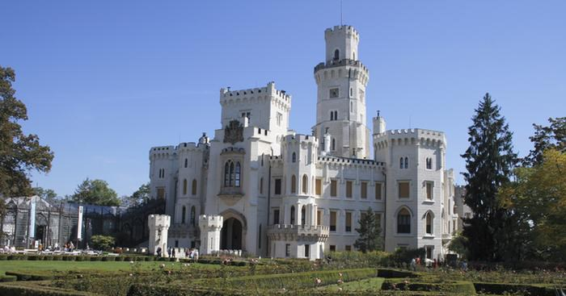
Çek Cumhuriyeti: Frauenberg Sarayı
Eski Bohemya derebeylerinin ikametgahlarından olan saray, Çek Cumhuriyeti’nin en sevilen yapılarından biri. Turistlere sergilemekten gurur duyulan en önemli eserler ise 17’nci yüzyıldan kalma duvar kağıtları.
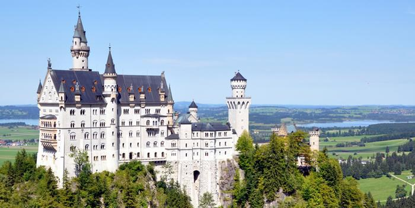
Almanya: Neuschwanstein Şatosu
Bavyera Kralı II. Ludwig tarafından yaptırılan şato, 1886 yılında açıldı. Her ne kadar II. Ludwig sarayın açılışını görememiş olsa da Masal Sarayı olarak da adlandırılan bu yapı Almanya’nın Thüringen eyaletinde ziyaretçileri
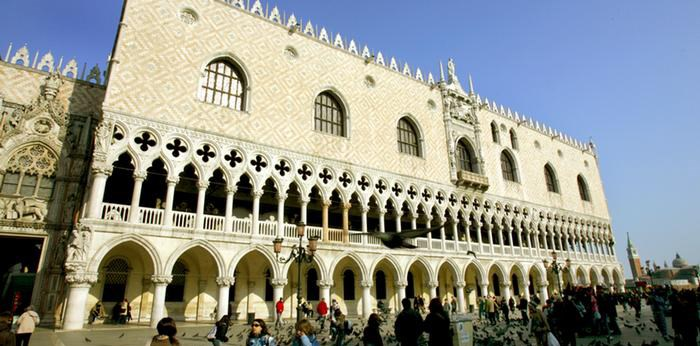
İtalya: Doge Sarayı
Doge Sarayı, tarihi Venedik Cumhuriyeti’nin politik kurumlarına ev sahipliği yaptı. Görkemli yapı, İtalya’nın deniz ve ticaret gücünün bir sembolü niteliğindeydi. Gotik tarzda yapılmış saray birçok yangında zarar gördü fakat arka arkaya yeniden inşa edildi. Saray, şu anda müze olarak kullanılıyor.
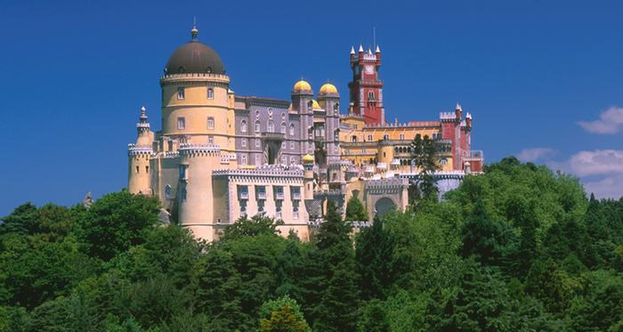
Portekiz: Pena Sarayı
Sanat tarihçileri, bu yapıda birçok stilin kiç bir biçimde birbirine karıştığı görüşünde. Bazıları, sarayın Disneyland’ı andırdığını düşünüyor. Fakat turistler, Sintra kentindeki saraya çok ilgi gösteriyor. Saray, 14’üncü yüzyıldan itibaren Portekiz krallarının yazlık rezidansı olarak kullanıldı.
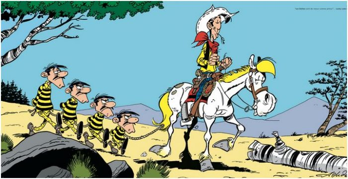
Redkit
Ağaçkakan Woody
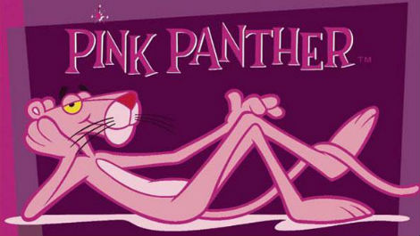
Pembe Panter
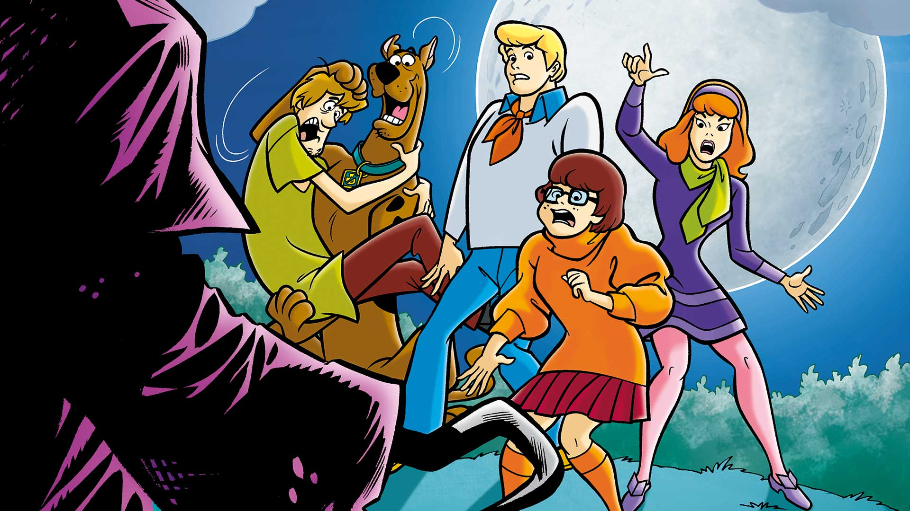
Scooby Doo
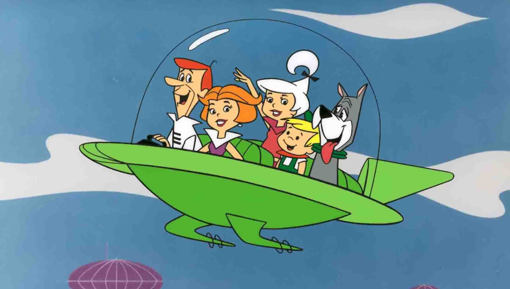
Jetgiller
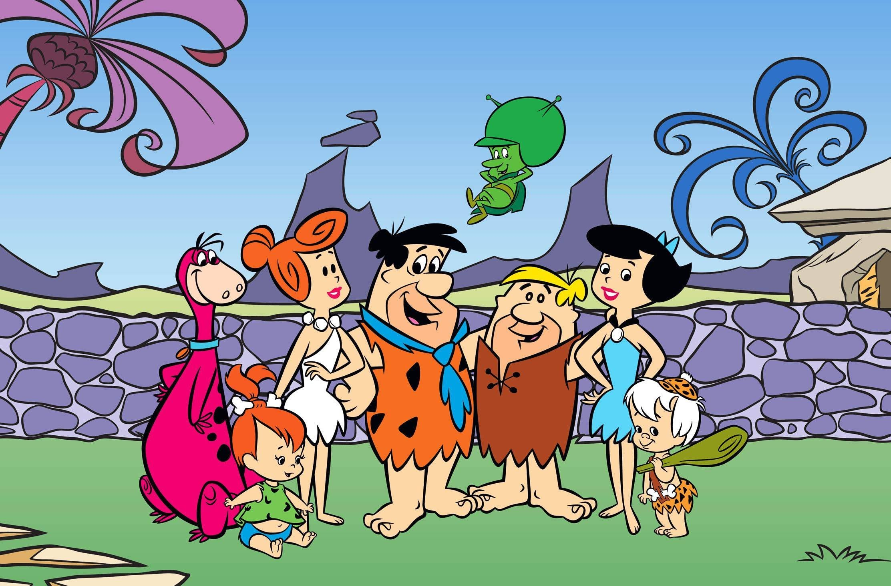
Taş Devri

Mask
Bugs Bunny
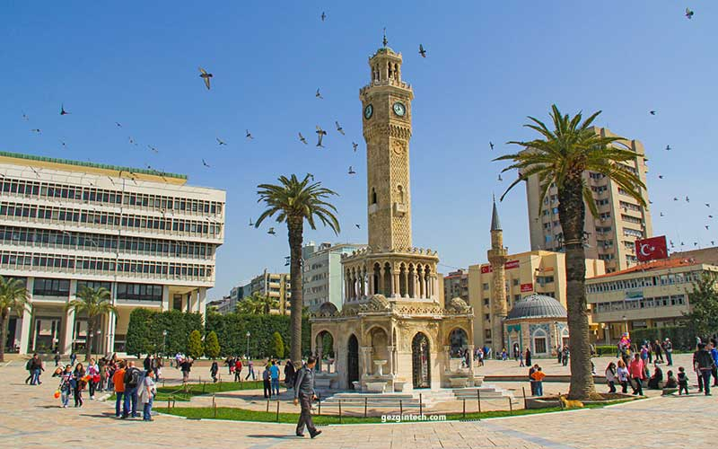
Saat Kulesi
İzmir Saat Kulesi, 1901’de Sultan Abdülhamit’in tahta çıkışının 25. yıldönümü için Sadrazam Küçük Sait Paşa tarafından yaptırılıyor. Birçok tarihi olaya tanıklık eden bu zarif yapı, adeta bir inci gibi Konak Meydanı‘nı süsleyerek İzmir’in sembolü haline geliyor. İzmirlilerin en önemli buluşma noktalarından biri haline gelen Konak Saat Kulesi, kente gelenlerin de önünde mutlaka fotoğraf çektirmek isteyecekleri sembollerden.
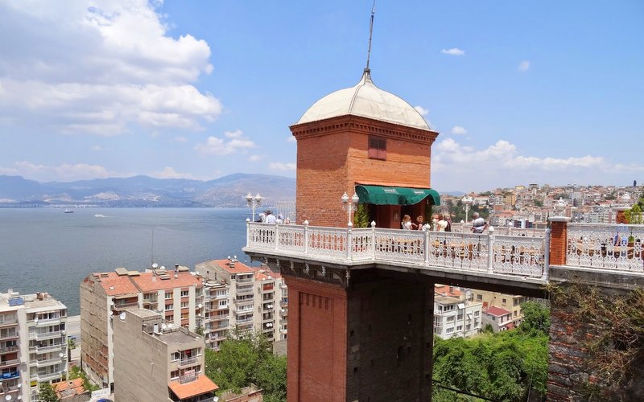
Asansör
Asansör, Mithatpaşa Caddesi ile Halil Rıfat Paşa semti arasındaki yükselti farkından dolayı, ulaşımı kolaylaştırmak amacıyla 1907’de Musevi iş adamı Nesim Levi tarafından yapılıyor. Şimdilerde terasındaki kafe ve restoranıyla, enfes körfez manzarasını görmek isteyen ziyaretçilerin vazgeçilmezleri arasında gösteriliyor. Ayrıca Asansör’ün Mithatpaşa girişinde yer alan Dario Moreno Sokağı eski İzmir evleri ile dikkat çekiyor.
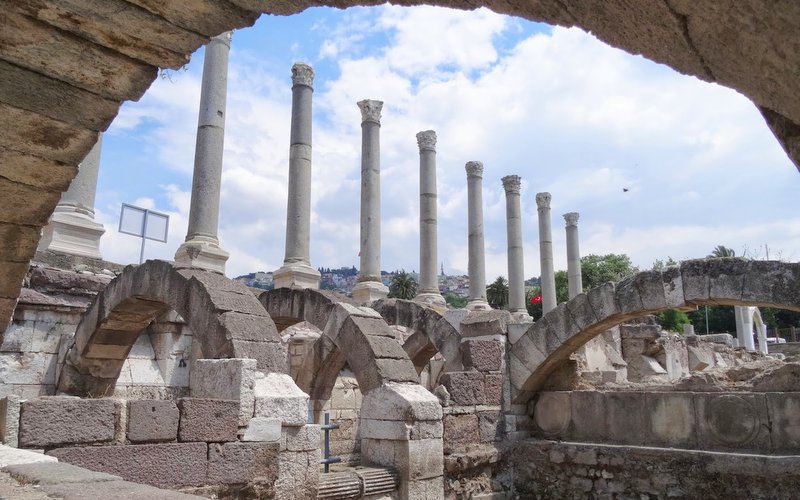
Agora
Agora, İzmir’in Namazgah semtinde bulunan ve görünümüyle Roma dönemine ait olduğu düşünülen antik yerlerden biri. İzmir Agorası’nın ticari olmaktan çok devlet agorası olarak kullanıldığı bilinenler arasında. Osmanlı döneminde mezarlık ve namazgah olarak kullanılan mekanda yapılan kazı çalışmaları sonucu, buranın bilinen en büyük Agora olduğu ortaya çıkıyor.
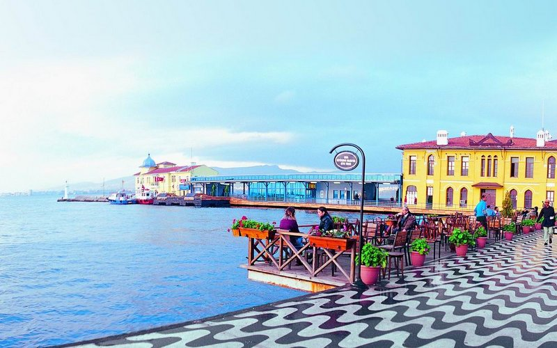
Pasaport İskelesi
Pasaport İskelesi, yapımına 1867’de başlanan ve ancak 1884’te tamamlanabilen iskele ve gümrük binasını bir arada barındırıyor. Yapımının bu kadar uzun sürmesinin nedenleri arasında 1922 İzmir Yangını’nda zarar gören yolcu salonunun yeniden inşa edilmesi de bulunuyor. İzmir’deki en güzel gün batımının izlenebileceği noktalardan biri olan Pasaport İskelesi, günümüzde Körfez vapurlarının yanaştığı, önemli bir yolcu potansiyeline sahip iskeleler arasında bulunuyor.
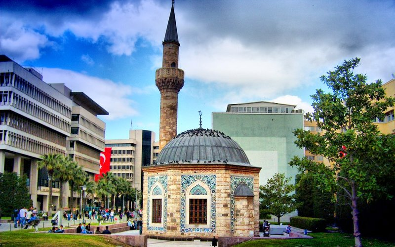
Yalı (Konak) Camii
Konak Yalı Camii, Hükümet Konağı ile İzmir Büyükşehir Belediyesi arasında yer alan ve Konak Meydanı ile özdeşleşmiş yapılardan biri. İzmir’in en zarif yapılarından olan Camii, Mehmet Paşa’nın kızı Ayşe Hatun tarafından yaptırılıyor. 18. yy klasik Osmanlı mimarisi izleri taşıyan cami, muhteşem firuze çini süslemeleri ve sekizgen planıyla görenleri kendine hayran bırakıyor.
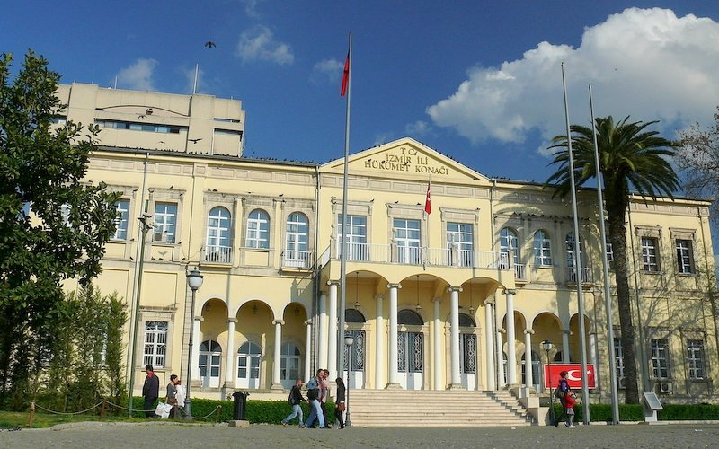
Hükümet Konağı
Hükümet Konağı, İzmirliler için büyük önem taşıyan binalardan biri olarak biliniyor. 1868-1872 yılları arasında yapılan konak, zamanla kentin simgelerinden biri haline geliyor. Konak Meydanı’nda bulunan ve “Şehrin en yüce binası ve en büyük ziyneti” diye tanımlanan bina, ulusal bağımsızlık savaşı olan Kurtuluş Savaşı’nda önemli bir yere sahip. 1922’de Türk ordusunun İzmir’e gelmesiyle Hükümet Konağı’na çekilen Türk Bayrağı, İzmir’in kurtuluşunun da simgesi haline geliyor.
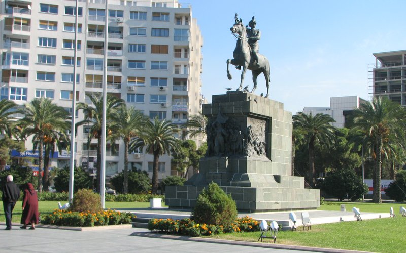
Cumhuriyet Meydanı
Pasaport Vapur İskelesi’nin yanı başında bulunan Cumhuriyet Meydanı, İzmir’in tüm resmi kutlama ve organizasyonlarının yapıldığı tek ve en eski meydan. Mustafa Kemal Atatürk’ün “Ordular ilk hedefiniz Akdeniz’dir, ileri!” komutunu simgeleyen ve 1933’te İtalyan heykeltıraş Pietro Canunica tarafından yapılan anıt, bugün kentin de en önemli simgeleri arasında yer alıyor.
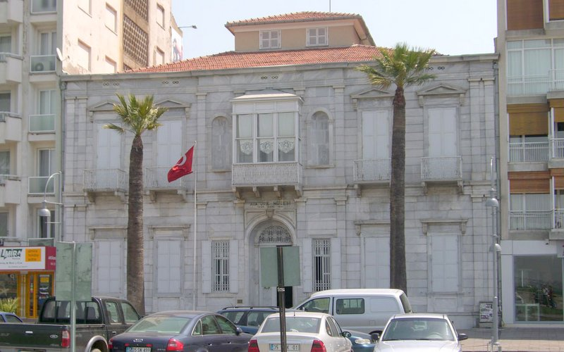
İzmir Atatürk Müzesi
İzmir Atatürk Müzesi, 1875-1880 yılları arasında konut olarak yapılsa da 1927’de belediye tarafından Mustafa Kemal Atatürk’e armağan ediliyor. Bina, Atatürk’ün İzmir’e geldiğinde kaldığı ve çalışmalarını sürdürdüğü evi haline geliyor. Alsancak 1. Kordon’da bulunan ve 1941’de müzeye dönüştürülen mekan, bembeyaz dış cephesiyle görenleri kendine hayran bırakıyor.
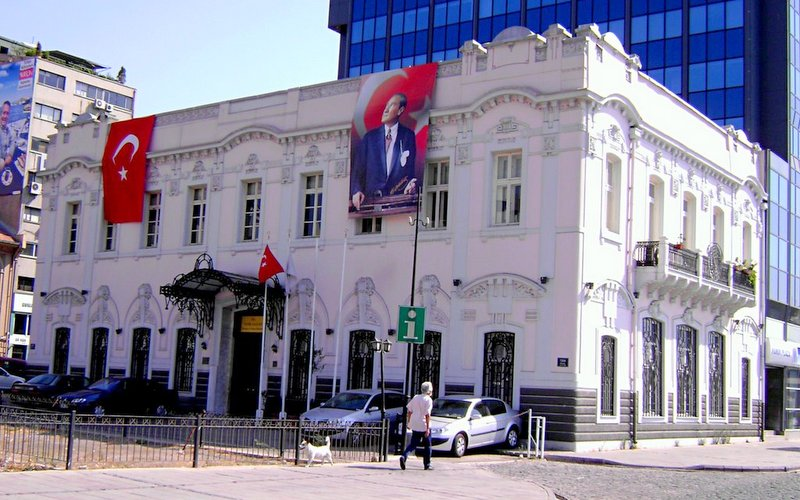
Kültür ve Turizm Müdürlüğü
Kültür ve Turizm Müdürlüğü binası, 1891’den beri birçok farklı amaçlar için kullanılan yerlerden biri. 1919’a kadar İzmir Ticaret Borsası’nın etkinlik gösterdiği mekan, işgalden sonra 1921’de Yunan Milli Bankası kullanımına ayrılıyor. 1922’den sonra İzmir Merkez Postanesi ve Paket Postanesi’ne dönüştürülen yapı, günümüzde İzmir İl Kültür ve Turizm Müdürlüğü hizmet binası olarak kullanılıyor. Bina Pasaport ile Konak Pier arasında yer alıyor.
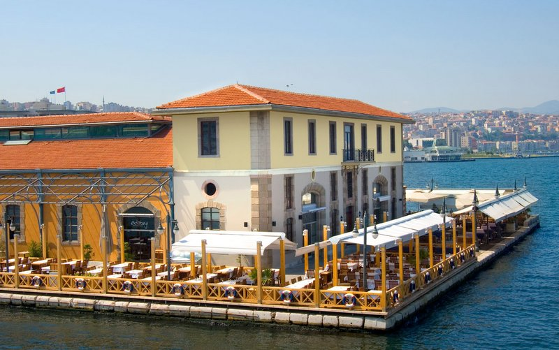
Konak Pier (Eski Gümrük Binası)
Mimarisi Gustave Eiffel’e ait olan Konak Pier, İzmirlilerin soluk aldığı noktalardan biri. Başta büyük bir depo ve ardından balık hali olarak da kullanılan bina, yapılan restorasyonların ardından günümüzde alışveriş merkezine dönüştü. İçinde birçok mağaza, sinema salonu, kitap evleri ve birbirinden güzel kafeler bulunan pier, deniz kenarında oturup vakit geçirmek isteyenlerin vazgeçilmezleri arasında. Pier’i Konak ile Pasaport iskeleleri arasında görmek mümkün.
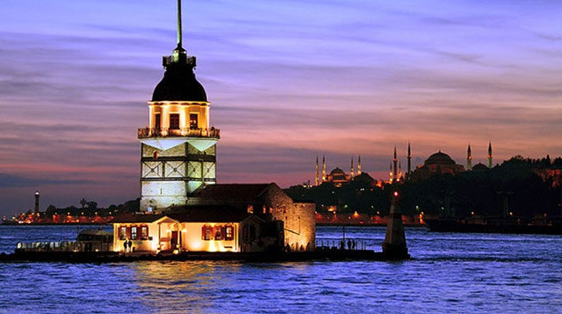
Kız Kulesi
İstanbul Boğazı'nın göz bebeği niteliğinde olan, İstanbul'da çekilen dizilerin, filmlerin mutlaka bir karesinde geçen Kız Kulesi, küçük bir ada'nın üzerinde inşa edilmiş tarihi bir yapıdır. Hangi amaçla ve neden yapıldığı konusunda çeşitli rivayetler bulunan Kız Kulesi, İstanbul'a gelenlerin veya yaşayanların mutlaka görmesi gereken mekanlardandır. Kız Kulesi ayrıca boğaza farklı bir açıdan bakabileceğiniz, akşam yemeği veya tarihi yapısı nedeniyle görülmesi gereken tarihi mekanlardan biridir.
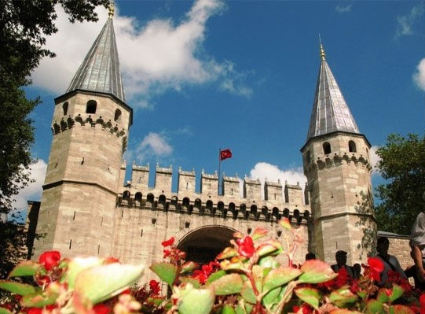
Topkapı Sarayı
Abdülmecit döneminde ziyareye açılan, ihtişamıyla ve mimarisiyle büyüleyen Topkapı Sarayı günümüzde de ziyaretçilerini ağırlamakta, gizemi ve Osmanlı mimarisine ait taşıdığı izlerle turistlerin ilgi odağı olmaktadır. 1478 yılında Fatih Sultan Mehmet tarafından yaptırılan saray, 400 yıl boyunca padişahların yaşadığı ve devleti idare ettikleri ana merkez görevini üstlenmiş, tarihe tanıklık etmiştir.
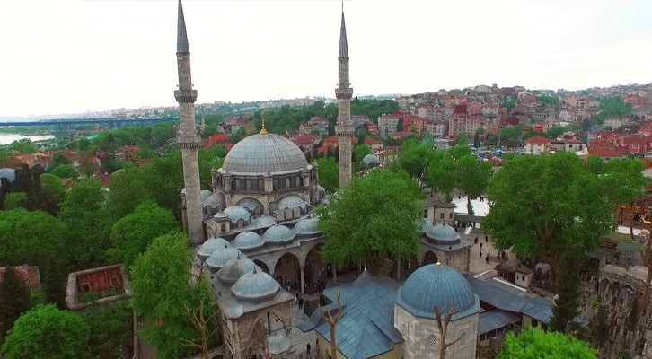
Eyüp Sultan Camii
Eyüp Sultan Camii, yerli ve yabancı turistler için ilgi odağı olan kutsal bir mekandır. Eyüp Sultan Camii Eyüp semtinde olup, Haliç kıyısında yer almaktadır. Ramazan ayı ve Cuma günlerinde kalabalığın adresi olan Eyüp Sultan Camii görülmesi gereken, kutsal kabul edilen yerlerin başında gelir.
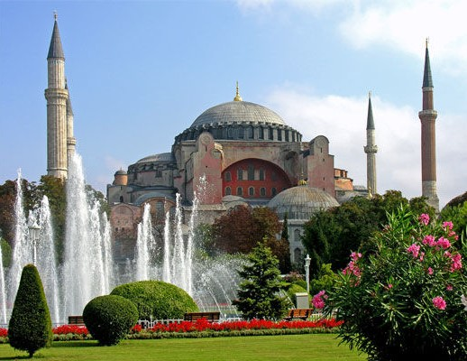
Ayasofya Camii
Bizans İmparatoru 1. Jüstinyen tarafından yaptırılan daha sonra Fatih Sultan Mehmet'in İstanbul'u fethettikten sonra camiye dönüştürdüğü Ayasofya Müzesi görülmesi gereken yerlerden biridir. Görkemiyle turistleri büyüleyen Ayasofya turistlerin büyük bir ilgisini çekmektedir.
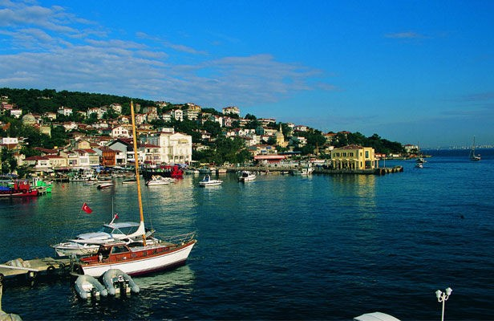
Adalar
Büyükada, Heybeliada, Burgazada gibi bildiğimiz takım adalar eski dönemlerde Prens Adaları olarak da bilinmekteydi. Bunun nedeni ise Bizans İmparatorluğu döneminde taç giymiş bir çok saray mensubu İstanbul'a uzak olduğu için bu adalara sürgün edilmiş, ve buralarda yaşamak durumunda kalmıştır. Günümüzde ise nostaljik havası, hala kullanılan faytonları ve trafiğin olmaması nedeniyle hafta sonu kaçamaklarının ilk adresleri haline gelmiştir. Adalar, piknik yapmak, bisiklete binmek, nostaljiyi tatmak isteyen yerli yabancı bir çok turistin gözdesi haline gelmiştir.
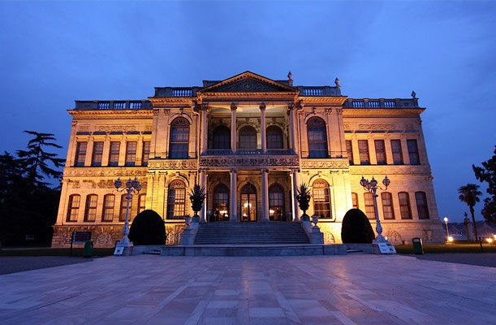
Dolmabahçe Sarayı
Dolmabahçe Sarayı, imparatorluk döneminde Osmanlı Kaptan-ı Derya'sının gemileri demirlediği bir alan olarak kullanılmış daha sonra ise has bahçeye dönüştürülmüştür. Cumhuriyet döneminde ise Atatürk'ün İstanbul ziyaretlerinde kaldığı bir mekan olmasıyla ve hayata gözlerini burada yumması nedeniyle büyük önem taşımaktadır. Bu kadar tarihi dokuyu bir arada bulunduran saray, yerli yabancı turistlerin mutlaka görmesi gereken yerlerdendir.
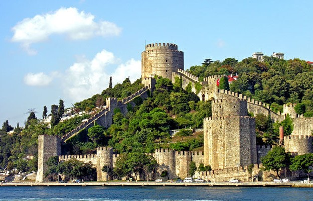
Rumeli Hisarı
Osmanlı döneminde, İstanbul Fethi sırasında Anadolu Hisarı'ndan halat çekmek için yapılmış olan etrafı kalelerle kaplı Rumeli Hisarı günümüzün vazgeçilmez mekanları arasında yer alır. Hem turistlerin hem İstanbul'da yaşayanların kesinlikle bir hafta sonu kahvaltısı için aynı zamanda da tarihi yapıyı görmek için gitmesi gereken mekanlardandır.
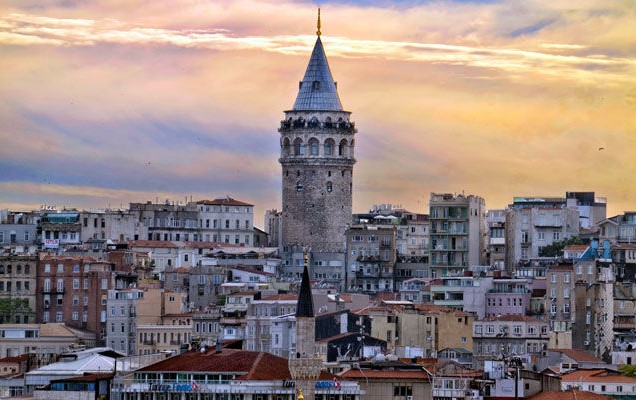
Galata Kulesi
Galata Kulesi dünyanın en eski kulelerinden biri olup, Bizans İmparatoru Anastasius tarafından inşa edilmiştir. 17. yüzyılın ilk yarısında IV. Murat döneminde Hezarfen Ahmet Çelebi, Okmeydanı'nda rüzgarları kollayıp uçuş talimleri yaptıktan sonra, tahtadan yaptırdığı kartal kanatlarını sırtına takarak 1638 yılında Galata Kulesi'nden Üsküdar-Doğancılar'a uçmuştur. Bu uçuş Avrupa'da ilgiyle karşılanmıştır. İstanbul'a gelen turistlerin öncelikleri arasında yer alan kule İstanbul'u bir bütün olarak görmeyi sağlar.
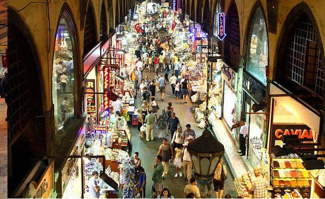
Mısır Çarşısı
İstanbul'un en eski kapalı çarşılarından biri olan Mısır Çarşısı aktarlarıyla, kuruyemiş ve şarküteri ürünlerinin satılmasıyla meşhur bir mekandır. Turistlerin özellikle alışveriş için tercih ettiği gözde mekanlardandır. 1600 yılında Turhan Sultan tarafından yaptırılan mekan, pazar günleri de açık olma özelliğiyle cezbedicidir. İstanbul'da mutlaka görülmesi gereken yerler arasında yer alır.
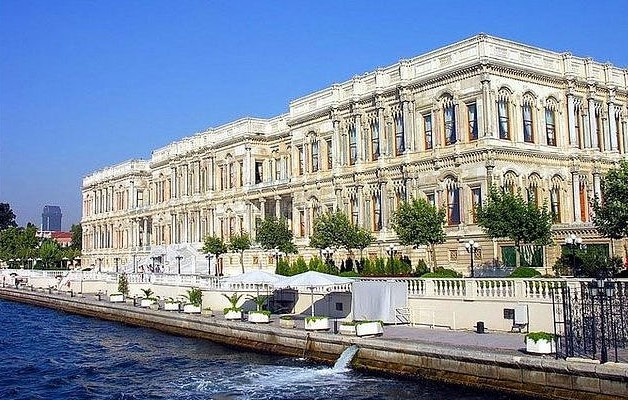
Çırağan Sarayı
Sultan Abdülaziz tarafından yaptırılan Çırağan Sarayı bir dönem konumu itibariyle "Beşiktaş Sarayı" olarak da anılmaktaydı. Büyük bir ihtişama ve görkeme sahip olan saray, bugün düğün, balo, parti gibi organizasyonların düzenlendiği bir mekan halini almıştır. Böyle bir mimariyi görmek, geçmişten bir hava solumak isteyenlerin çeşitli organizasyonlar için uğrak yeri olmuş, bir çok yerli yabancı turisti ağırlamaktadır.